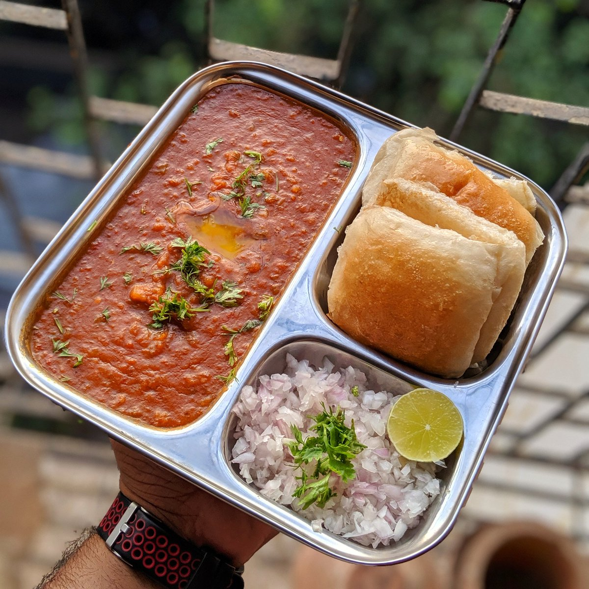

Pav Bhaji

Serves : 4
Time : 45-50 minutes
Ingredients :
-
For the Bhaji
- 3 medium potatoes
- 1 cup cauliflower
- 1/2 cup green peas
- 1 medium carrot
- 1 medium capsicum
- 2 medium tomatoes
- 1 large onion
- 2 tbsp pav bhaji masala
- 1 tsp red chilli powder
- 1/2 tsp turmeric
- 1 tsp coriander powder
- 1/2 tsp cumin seeds
- Salt to taste
- 2-3 tbsp butter
- 1 tbsp oil
- 1 tsp ginger-garlic paste
- 1 tbsp lemon juice
- Fresh coriander, chopped
-
For the Pav
- 8 pav
- 1-2 tbsp butter
- 1/2 tsp pav bhaji masala
Method :
- Chop the potatoes, cauliflower, carrot, and capsicum into small pieces.
- Add the chopped vegetables and green peas to a pressure cooker.
- Add about 1 1/2 cups water and a little salt.
- Pressure cook until the vegetables become very soft.
- Mash the cooked vegetables thoroughly using a potato masher.
- Heat 1 tbsp oil and 1 tbsp butter in a large pan.
- Add cumin seeds and let them crackle.
- Add finely chopped onions and cook until they become translucent.
- Add ginger-garlic paste and cook for about 1 minute.
- Add finely chopped tomatoes and cook until they become soft.
- Add turmeric, red chilli powder, coriander powder, and pav bhaji masala.
- Mix well and cook for 1-2 minutes.
- Add the mashed vegetables to the pan.
- Add water gradually until the bhaji reaches a thick but pourable consistency.
- Mash everything together and mix well.
- Cook on low-medium heat for 10-15 minutes, stirring occasionally.
- Add another tablespoon of butter.
- Add lemon juice and adjust the salt and spices according to taste.
- Garnish with freshly chopped coriander.
- Cut the pav horizontally.
- Heat a pan and add a little butter.
- Sprinkle a little pav bhaji masala over the butter.
- Place the pav cut-side down and toast until lightly crisp and golden.
Tip: Mash the vegetables thoroughly to get the smooth texture that pav bhaji is known for. Serve
with chopped onion, coriander, lemon wedges, and buttered pav.